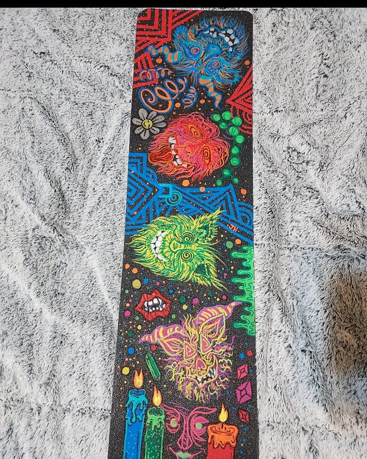
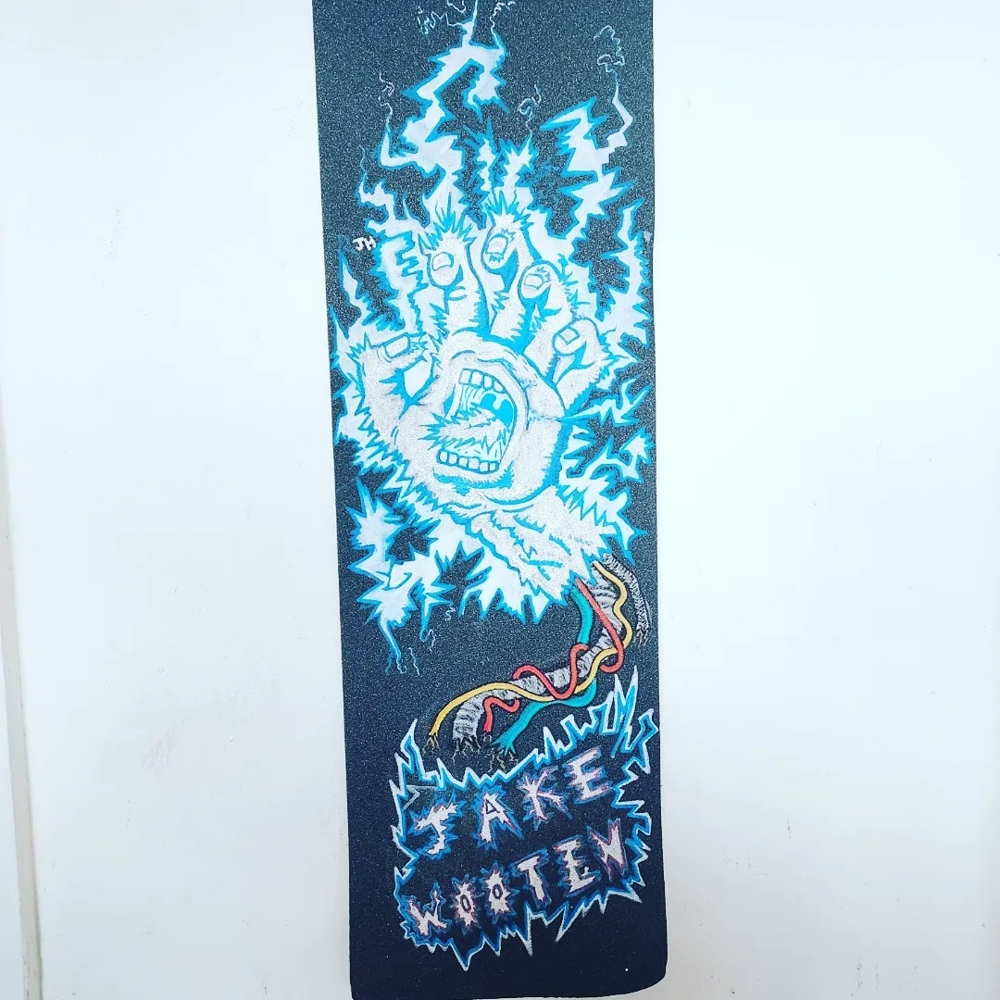
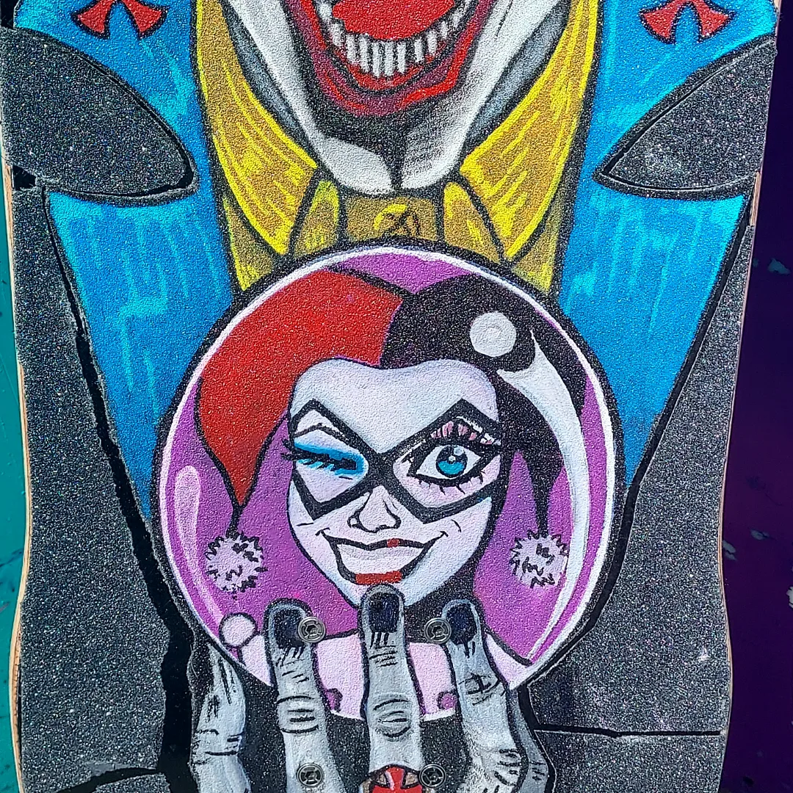

About
Our mission is to allow every skateboarder to not just be creative with their tricks but also with the grip tape they're riding on.
We want to build a community that feels confident and excited about their new grip art purchase. The brands we use to draw on griptape are Zeyar and pasco pens.
These are oil based markers and hold onto the griptapes texture.
Zeyar is mostly used by us when we're trying to accomplish a more detailed piece. If you are looking for vibrant colors Zeyar is the perfect brand.
Our vision is to send art to skaters all around the country who share a love for skateboarding that is equal to our company.
If there are any problems with your purchase email us as soon as possible and we will help to the best of our abilities.

Read More...
Customs
We are capable of doing a number of different things when it comes to creating art for your grip.
Our brand specializes in detailed characters and vibrant colors. The pictures below will hopefully give you an idea of what we can do for you.
Please email us and give us a detailed description of what you would like done.
If you have an image that can help describe to us your vision please attach the file to the email.

Read More...
Our Prices
Our prices depend on the level of difficulty the piece will take to make. The griptape price is included in your purchase so when you pick out the kind of grip material you want that adds on approximately $10.00.
If you've chosen a print or pattern we do those for $25.00.
If you've chosen simple characters or word art thats between $35-$65 dollars. More detailed pieces are between $80-$120.
The prices also vary on the amount of hours it takes to create the art piece that's why certain prices differ a bit.
 Read More...
Read More...
Contact Us
We hope that your experience looking through our site has been easy to understand and makes you want to purchase your own custom grip.
Be ready that this is custom work so it could take a while to get your purchase depending on the flow of customer inquiries.
Please contact us and we will start fulfilling your order.

Read More...